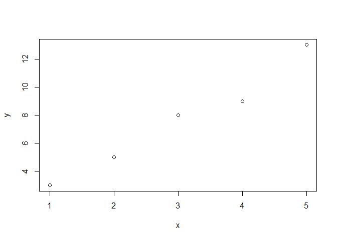

The goal of corr is to compute the correlation of x and y if these are vectors.
Installation
You can install the development version of corr like so:
# install.packages("devtools")
devtools::install_github("lv-lf/corr")Example
library(corr)
x <- 1:5
y <- c(3, 5, 8, 9, 13)
corr1(x, y)
#> [1] 0.9863939
corr2(x, y)
#> [1] 0.9863939
cor(x, y)
#> [1] 0.9863939
plot(x, y)
data(dat)
dim(dat)
#> [1] 32 11
path <- system.file("extdata", "example.csv", package = "corr")
read.csv(path, header = T)
#> X mpg cyl disp hp drat wt qsec vs am gear carb
#> 1 Mazda RX4 21.0 6 160.0 110 3.90 2.620 16.46 0 1 4 4
#> 2 Mazda RX4 Wag 21.0 6 160.0 110 3.90 2.875 17.02 0 1 4 4
#> 3 Datsun 710 22.8 4 108.0 93 3.85 2.320 18.61 1 1 4 1
#> 4 Hornet 4 Drive 21.4 6 258.0 110 3.08 3.215 19.44 1 0 3 1
#> 5 Hornet Sportabout 18.7 8 360.0 175 3.15 3.440 17.02 0 0 3 2
#> 6 Valiant 18.1 6 225.0 105 2.76 3.460 20.22 1 0 3 1
#> 7 Duster 360 14.3 8 360.0 245 3.21 3.570 15.84 0 0 3 4
#> 8 Merc 240D 24.4 4 146.7 62 3.69 3.190 20.00 1 0 4 2
#> 9 Merc 230 22.8 4 140.8 95 3.92 3.150 22.90 1 0 4 2
#> 10 Merc 280 19.2 6 167.6 123 3.92 3.440 18.30 1 0 4 4
#> 11 Merc 280C 17.8 6 167.6 123 3.92 3.440 18.90 1 0 4 4
#> 12 Merc 450SE 16.4 8 275.8 180 3.07 4.070 17.40 0 0 3 3
#> 13 Merc 450SL 17.3 8 275.8 180 3.07 3.730 17.60 0 0 3 3
#> 14 Merc 450SLC 15.2 8 275.8 180 3.07 3.780 18.00 0 0 3 3
#> 15 Cadillac Fleetwood 10.4 8 472.0 205 2.93 5.250 17.98 0 0 3 4
#> 16 Lincoln Continental 10.4 8 460.0 215 3.00 5.424 17.82 0 0 3 4
#> 17 Chrysler Imperial 14.7 8 440.0 230 3.23 5.345 17.42 0 0 3 4
#> 18 Fiat 128 32.4 4 78.7 66 4.08 2.200 19.47 1 1 4 1
#> 19 Honda Civic 30.4 4 75.7 52 4.93 1.615 18.52 1 1 4 2
#> 20 Toyota Corolla 33.9 4 71.1 65 4.22 1.835 19.90 1 1 4 1
#> 21 Toyota Corona 21.5 4 120.1 97 3.70 2.465 20.01 1 0 3 1
#> 22 Dodge Challenger 15.5 8 318.0 150 2.76 3.520 16.87 0 0 3 2
#> 23 AMC Javelin 15.2 8 304.0 150 3.15 3.435 17.30 0 0 3 2
#> 24 Camaro Z28 13.3 8 350.0 245 3.73 3.840 15.41 0 0 3 4
#> 25 Pontiac Firebird 19.2 8 400.0 175 3.08 3.845 17.05 0 0 3 2
#> 26 Fiat X1-9 27.3 4 79.0 66 4.08 1.935 18.90 1 1 4 1
#> 27 Porsche 914-2 26.0 4 120.3 91 4.43 2.140 16.70 0 1 5 2
#> 28 Lotus Europa 30.4 4 95.1 113 3.77 1.513 16.90 1 1 5 2
#> 29 Ford Pantera L 15.8 8 351.0 264 4.22 3.170 14.50 0 1 5 4
#> 30 Ferrari Dino 19.7 6 145.0 175 3.62 2.770 15.50 0 1 5 6
#> 31 Maserati Bora 15.0 8 301.0 335 3.54 3.570 14.60 0 1 5 8
#> 32 Volvo 142E 21.4 4 121.0 109 4.11 2.780 18.60 1 1 4 2